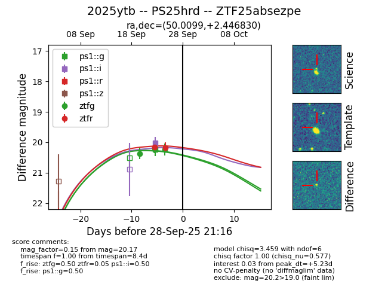
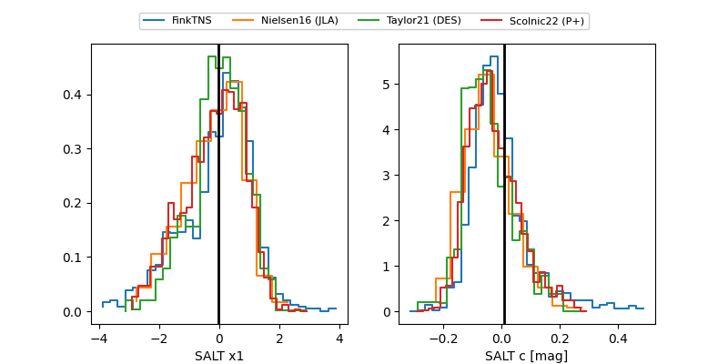

FINK: ZTF25absezpe
Lasair: ZTF25absezpe
ALeRCE: ZTF25absezpe
TNS: 2025ytb
YSE: 2025ytb
ZTF25absezpe (ztf,fink)
2025ytb (tns,yse)
PS25hrd (panstarrs)
equatorial (ra, dec) = (50.0099,+2.44683)
galactic (l, b) = (179.3163,-43.57109)


last ps1::g=20.24, ps1::i=20.02, ztfg=20.23, ztfr=20.17
1 ps1::g, 1 ps1::i, 3 ztfg, 2 ztfr detections